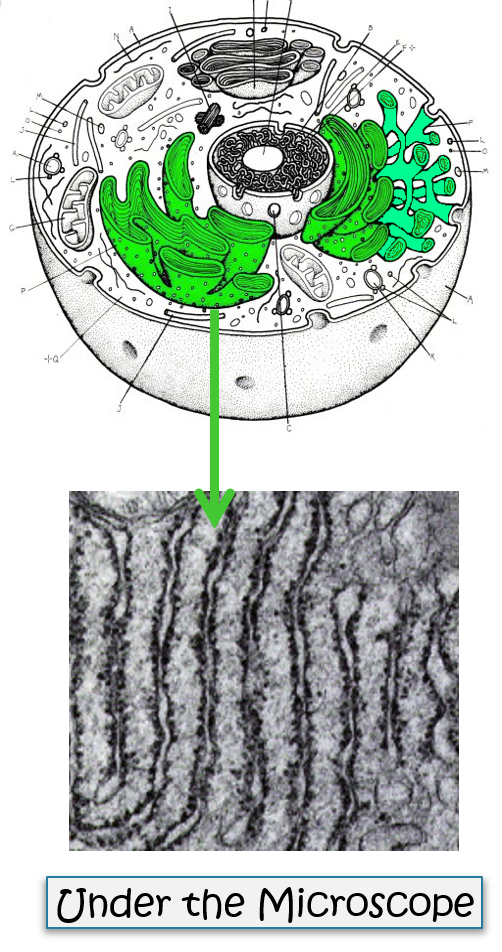

Rough Endoplasmic Reticulum
What makes the Rough Endoplasmic Reticulum "Rough"?
- The Rough Endoplasmic Reticulum (Rough ER) is a network of membranes that have ribosomes attached, giving it a rough appearance.
- The Rough ER acts as a processing and packaging system that works with the ribosomes to make proteins.
